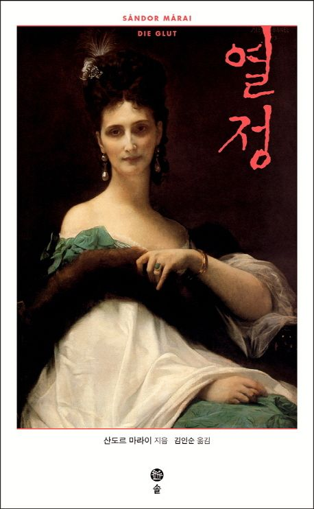
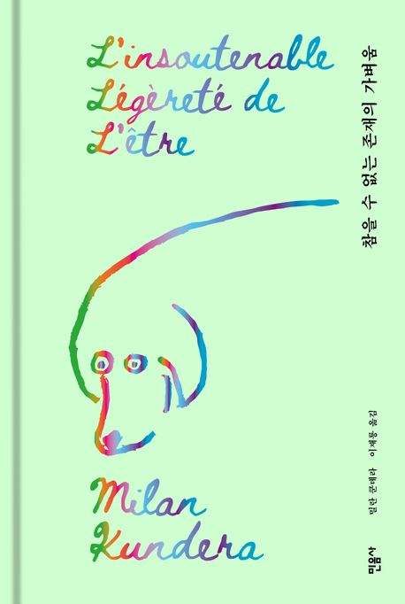

📖첫번째 추천 도서📖
우선 헝가리의 거장, 산도르 마라이의 책을 소개합니다.

<열정> 표지
책 정보
- 도서명
- <열정>
- 저자
- 산도르 마라이(1990~1989)
- 추천 대상
- 헝가리 문학에 관심있는 독자
이 책을 추천하는 이유
- 치밀한 감정 묘사가 몰입을 유도한다.
- 아침드라마를 보는듯 쉽게 읽을 수 있다.
- 수려한 문장은 읽는 것만으로 즐겁다.
책을 읽는 순서
- 책 제목과 표지를 살펴본다.
- 목차를 확인한다.
- 인상 깊은 문장에 표시한다.
- 읽은 후 느낀 점을 정리한다.
인상 깊은 문장
"중요한 문제들은 결국 언제나 전 생애로 대답한다네."
📖두번째 추천 도서📖
두번째는 세계적인 문호, 밀란 쿤데라의 책입니다.

<참을 수 없는 존재의 가벼움> 표지
책 정보
- 도서명
- <참을 수 없는 존재의 가벼움>
- 저자
- 밀란 쿤데라(1929~2023)
- 추천 대상
- 체코 문학에 관심있는 독자
이 책을 추천하는 이유
- 존재의 가벼움이란 무엇인가? 궁금하다면
- 다소 난해한듯 하지만 다 읽은 후에는 큰 보람을 선사한다.
- 수려한 문장은 읽는 것만으로 즐겁다.
책을 읽는 순서
- 책 제목과 표지를 살펴본다.
- 목차를 확인한다.
- 인상 깊은 문장에 표시한다.
- 읽은 후 느낀 점을 정리한다.
인상 깊은 문장
"인간의 시간은 원형으로 돌지 않고 직선으로 나아간다.
행복은 반복의 욕구이기에, 인간이 행복할 수 없는 것도 이런 이유 때문이다."